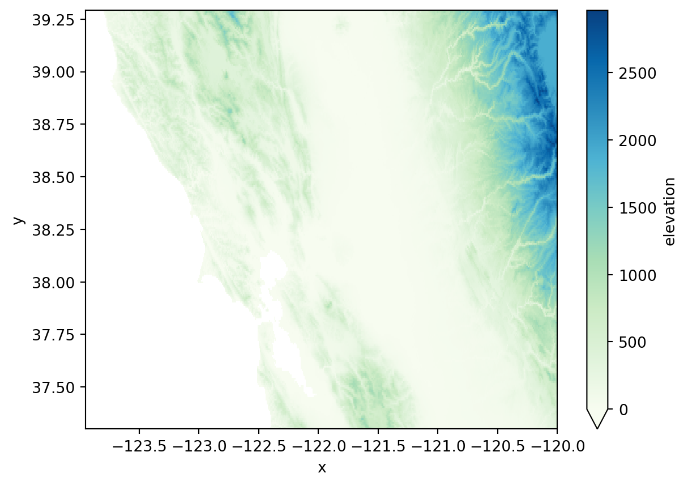
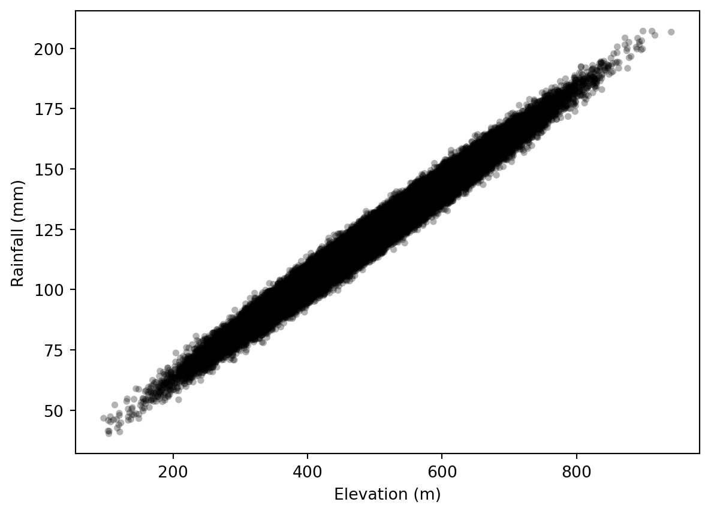
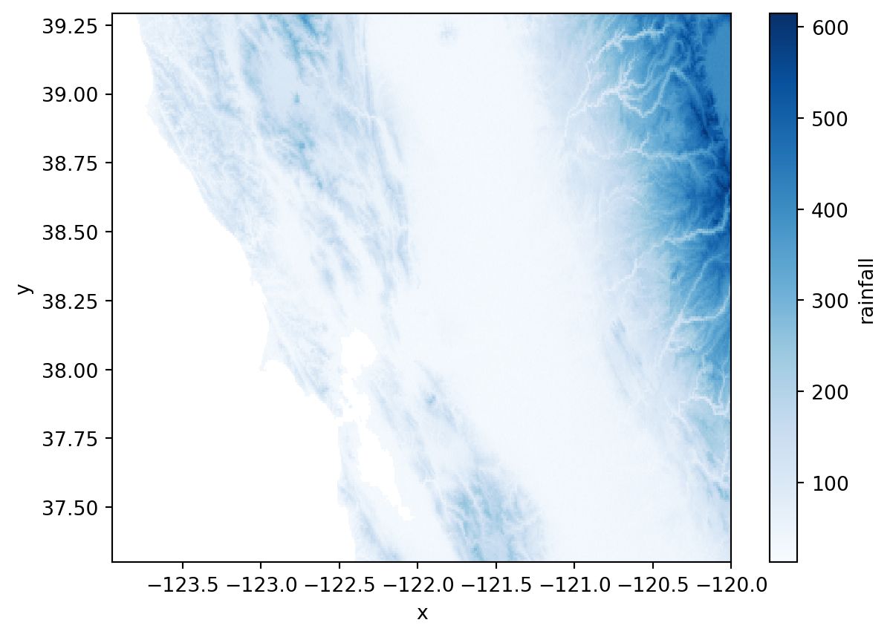
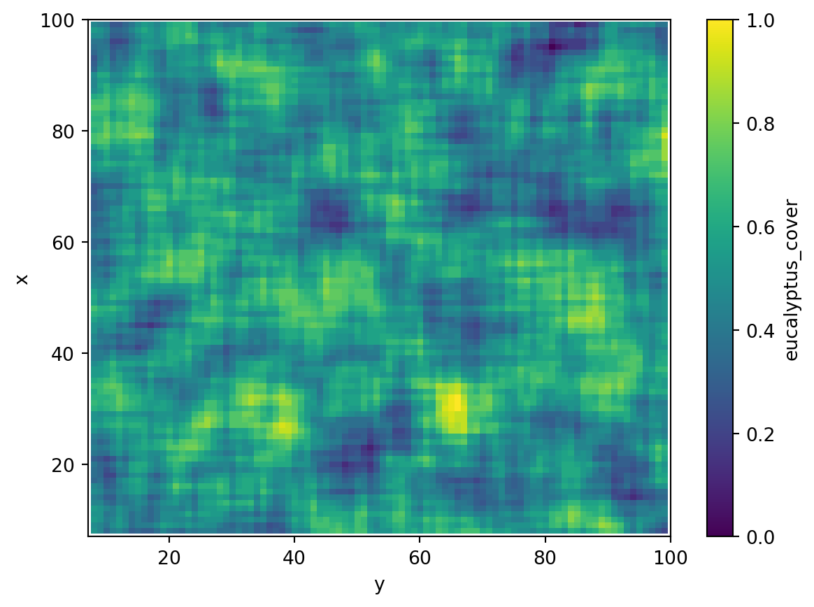
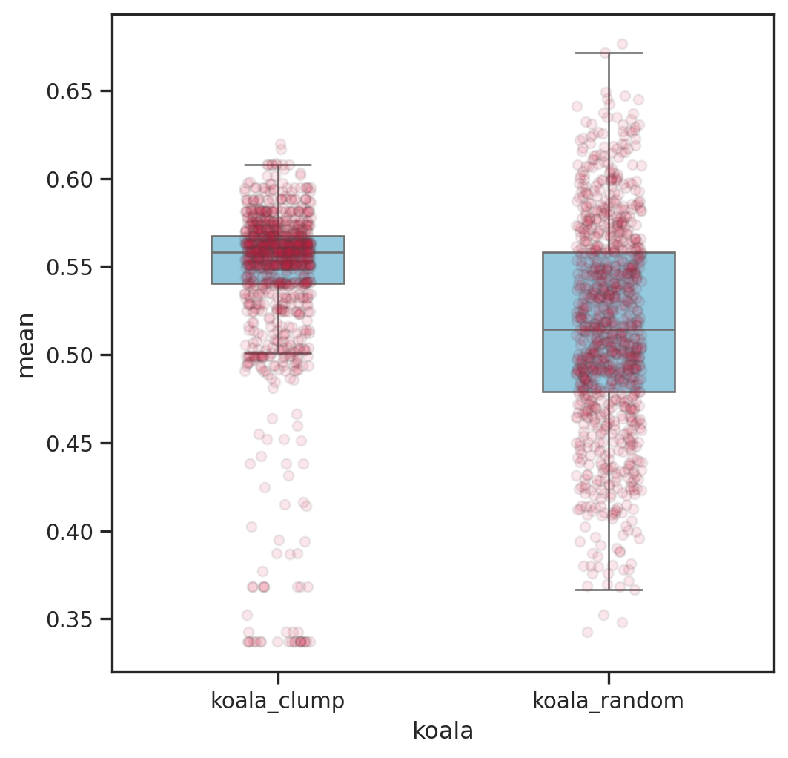
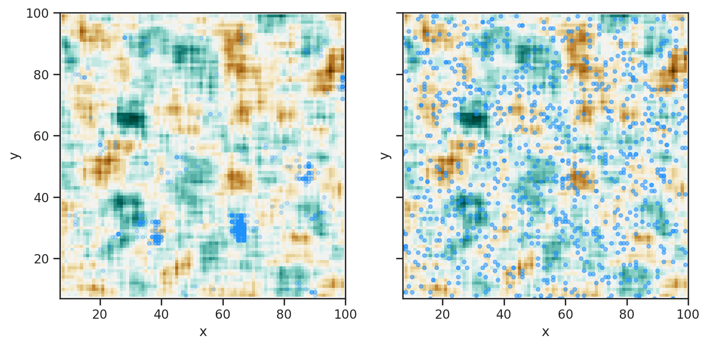

import numpy as np # array data
import xarray as xr # fancy array data
import pandas as pd # dataframe
import statsmodels.api as sm # modelling
import seaborn as sns # pretty plotting
import matplotlib.pyplot as plt # basic plotting
# set seed
rng = np.random.default_rng(1)GEM500: Simulating Data
In this tutorial, we will work with some simulated spatial raster data in Python to (1) develop a classification scheme and (2) extract some data from an area of interest.
In its simplest form, a raster is a 2D georeferenced grids filled with continuous (i.e. values are real numbers) or discrete (i.e. values are factors representing categories) values. The data within a raster can describe various characteristics of interest, such as number of trees, slope, or dominant species, all within the pixel size. Satellite imagery are examples of raster data. Raster data is useful in landscape ecology because it allows us to extract spatially-explicit information at a particular spatial resolution for a feature of interest or understand how a phenomena changes at different scales. One example of the latter is how tree height relates to its diameter at the pixel or landscape level.
For this lab, we will work with a combination of numpy, xarray, (geo)pandas, along with some other stats and plotting libraries that are great for data science and geospatial data manipulation. If you are interested, check out their documentation.
Elevation and Precipitation
In the first example, we will use a elevation raster from the book Spatial Data Science with R to test whether a relationship exists between elevation and amount of rainfall. Next, we will create a continuous raster to map the relationship.
Before running any code, similarly to what we did for Lab 2 (historical data and disturbances), we need to establish our hypothesis. So we assume that precipitation increases linearly with elevation (i.e. higher elevations receive more rainfall), so let’s load and plot the data (Figure 1).
# load and plot data
with xr.open_dataarray('elevation.tif').squeeze() as r_elevation:
r_elevation.plot.imshow(cmap='GnBu', vmin=0)
plt.title('')
plt.show()

Next, we will use this data to create some fake precipitation records and align them with our initial hypothesis that precipitation linearly increases with elevation gain. To do so, we create some random numbers and change the elevation data based on those numbers. So what we are doing here is simply faking a linear relationship by creating precipitation data from the elevation model. We can do this using numpy.
# create new continuous values from a normal distribution
n = r_elevation.size # n cells in array
elevation = rng.normal(loc=500, scale=100, size=n)
# add noise to the data to make it realistic
noise = rng.normal(loc=3, scale=3, size=n)
# define the model
def mod(elevation, noise):
return 20 + elevation * 0.2 + noise
# create rainfall from the model
rainfall = mod(elevation, noise)To demonstrate the relationship, we build an actual linear model where we use elevation data (independent variable, our observation) to predict precipitation (dependent variable). Then, we plot it (Figure 2).
# fit linear model
model = sm.OLS(elevation, rainfall).fit()
# summary
model.summary()| Dep. Variable: | y | R-squared (uncentered): | 0.998 |
| Model: | OLS | Adj. R-squared (uncentered): | 0.998 |
| Method: | Least Squares | F-statistic: | 5.979e+07 |
| Date: | Sun, 29 Sep 2024 | Prob (F-statistic): | 0.00 |
| Time: | 20:47:27 | Log-Likelihood: | -5.1173e+05 |
| No. Observations: | 113286 | AIC: | 1.023e+06 |
| Df Residuals: | 113285 | BIC: | 1.023e+06 |
| Df Model: | 1 | ||
| Covariance Type: | nonrobust |
| coef | std err | t | P>|t| | [0.025 | 0.975] | |
| x1 | 4.0864 | 0.001 | 7732.238 | 0.000 | 4.085 | 4.087 |
| Omnibus: | 0.385 | Durbin-Watson: | 1.977 |
| Prob(Omnibus): | 0.825 | Jarque-Bera (JB): | 0.383 |
| Skew: | 0.004 | Prob(JB): | 0.826 |
| Kurtosis: | 3.001 | Cond. No. | 1.00 |
Notes:
[1] R² is computed without centering (uncentered) since the model does not contain a constant.
[2] Standard Errors assume that the covariance matrix of the errors is correctly specified.
dp = pd.DataFrame({
'elevation': elevation,
'rainfall': rainfall
})
ax = sns.scatterplot(dp,
x=elevation,
y=rainfall,
alpha=0.3,
color='black',
size=0.5,
linewidth=0,
legend=False)
ax.set(xlabel='Elevation (m)', ylabel='Rainfall (mm)')
plt.show()

Now we have created a relationship on the hypothesis that precipitation increases linearly with elevation gain. In the following step we will use this relationship to create a prediction raster of expected rainfall. To do that, we use the original r_elevation layer to create a realistic rainfall raster by applying the model we developed earlier using xarray.apply_ufunc. What this function does is applying a user-defined function to every element of an array along an optionally specified dimension. So we can take the r_elevation array and apply our model to each element to create a r_rainfall array (Figure 3).
# fix "look" of noise to make it look like r_elevation
noise = noise.reshape(r_elevation.shape)
# apply ufunc (this could be done using a for loop, but this
# is the recommended way using xarray)
r_rainfall = xr.apply_ufunc(mod,
r_elevation,
noise)
r_rainfall.name = 'rainfall'
# plot
r_rainfall.plot.imshow(cmap="Blues")
plt.title('')
plt.show()

Koalas and Eucalyptus trees
In this second example we will make another raster to test a different relationship. Suppose we think that the number of koalas is spatially related to the number of eucalyptus trees on the landscape. That is, the more clumped the trees are, the more koalas we see (similarly to lab 2).
To do so, we first make a binary 100x100 pixel landscape of randomly-located eucalyptus trees using numpy. Then, we simulate clumps of eucalyptus trees within a 9x9 moving window using xarray.rolling. In particular, with xarray.rolling we can calculate local statistic, such as the mean, within each 9x9 window to simulate the clumps (Figure 4).
# create binary landscape of shape 100 x 100
landscape = rng.integers(0, 2, (100, 100))
# convert to xarray for rolling operation and assign projection
landscape = xr.DataArray(data=landscape,
dims=['x', 'y'],
coords={'x': np.arange(100),
'y': np.arange(100)})
landscape.rio.write_crs('epsg:32619', inplace=True)
landscape.name = 'eucalyptus_cover'
# simulate clumps of eucalyptus trees using mean value within the window
patchy = landscape.rolling({'x': 9, 'y': 9}).mean()
# normalize the range in value (0 - 1)
patchy = (patchy - patchy.min()) / (patchy.max() - patchy.min())
# plot
patchy.plot.imshow(xlim=(7, 100), ylim=(7, 100))
plt.title('')
plt.show()

Now we have a raster that describes the cover of eucalyptus trees on our landscape, where 0 is no cover and 1 is 100% eucalyptus cover.
In this next section, we will take two samples of 1000 koala bears. The first sample is weighted so that koalas are more likely to be found next to an area with high eucalyptus cover by a factor of 20. In the second example, we randomly distribute the koalas. What this step does is taking the patchy raster and sample cell locations with a certain probability. We manipulate this probability such that there is a higher chance of sampling values in patchy that are closer to 1. Next, we can calculate the average density of eucalyptus trees within a 10 m buffer of each koala in the two samples.
This step tells us where the koalas are located in the landscape in the form of an index (cell index).
# probabilities of being closer to 1
probabilities = patchy.values.ravel() ** 20
# fill NaN with 0
probabilities[np.isnan(probabilities)] = 0
# normalize remaining probabilities (must sum to 1)
probabilities /= np.sum(probabilities)
# sample koalas location (cell index of a generic array)
koalas = rng.choice(np.arange(len(probabilities)),
size=1000,
p=probabilities)
# same for random koala distribution
koalas_random = rng.choice(np.arange(len(probabilities)), 1000)Knowing the location of the koalas, we can then extract the distribution of eucalyptus cover within a certain radius from the koalas. To do that, we look at the location of the koalas on the landscape, build a search radius of 10m, and extract the cover values.
First, we get the XY coordinates where the koalas are located based on their cell index. To do that, we’ll have to write a small function to query the coordinates and convert them into a geometry data structure using geopandas.
import geopandas as gpd # vector data manipulation
def query_xy(cell_number):
# get coordinates
y_coords = cell_number // 100
x_coords = cell_number % 100
# build geometry
koalas = gpd.points_from_xy(x=x_coords,
y=y_coords,
crs='epsg:32619')
return gpd.GeoDataFrame(geometry=koalas)
# query
koala_coords = query_xy(koalas)
koala_random_coords = query_xy(koalas_random)Second, we have to convert this data into a geometry that we can use to properly clip the patchy raster. We can do this using exactextract.
from exactextract import exact_extract # data extracttion
# first, transpose data for exact_extract to work
patchy = patchy.transpose('y', 'x')
# define function to use for both koala_coords and koala_random_coords
def extract_koala(kcoords):
# apply 10m buffer
koalas_b = gpd.GeoDataFrame(geometry=kcoords.geometry.buffer(10))
# extract from raster and get the mean
koalas_cover = exact_extract(patchy,
vec=koalas_b,
ops='mean',
output='pandas')
return koalas_cover
# run
koala_cover = extract_koala(koala_coords)
koala_random_cover = extract_koala(koala_random_coords)We can now plot the different cover for both koala samples (Figure 5).
# prepare data
koalas = pd.DataFrame({'koala_clump': koala_cover['mean'],
'koala_random': koala_random_cover['mean']})
# convert to long format for plotting
koalas = pd.melt(koalas,
var_name='koala',
value_name='mean')
# pretty plot
sns.set(style="ticks",
rc={"figure.figsize": (6, 6)})
b = sns.boxplot(koalas,
x='koala',
y='mean',
color='skyblue',
showfliers=False,
width=0.4)
b = sns.stripplot(data=koalas,
x='koala',
y='mean',
color="crimson",
linewidth=1,
alpha=0.1)
plt.show()

And finally let’s explore the two spatial distributions (Figure 6). For a better visualization, you could classify the patchy raster into categories.
# prepare subplots
fig, axs = plt.subplots(1, 2, sharex=True, sharey=True, figsize=(10, 5))
# plot by subplot
patchy.plot.imshow(xlim=(7, 100),
ylim=(7, 100),
ax=axs[0],
cmap='BrBG',
add_colorbar=False)
koala_coords.plot(ax=axs[0],
alpha=0.2,
color='dodgerblue',
markersize=10)
patchy.plot.imshow(xlim=(7, 100),
ylim=(7, 100),
ax=axs[1],
cmap='BrBG',
add_colorbar=False)
koala_random_coords.plot(ax=axs[1],
color='dodgerblue',
alpha=0.5,
markersize=10)
axs[0].set_title('')
axs[1].set_title('')
# to save
plt.savefig('koala_distribution.png')
plt.show()
